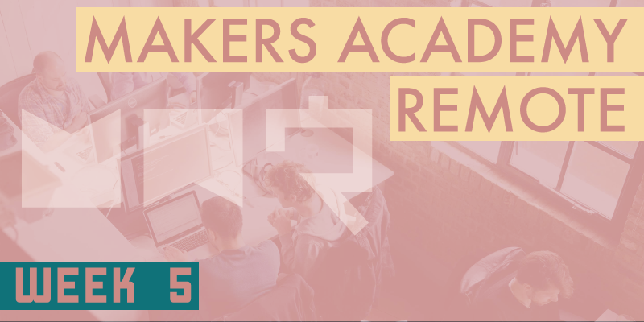

Ruby-Ruby-Ruby-JavaScript!
After several weeks of using almost nothing but the Ruby programming language (especially when considering the four week long pre-course), this week the focus has been on using another language called JavaScript instead.
Some of the cohort seemed wary of working with a completely new language after becoming comfortable with Ruby, perhaps assuming that there would be little similarity between the two. I've worked (at a basic level) with a few different languages in the past so I was already aware that many of the primary conventions would be broadly shared, but I think this came as a relief to many of the cohort to discover. Both Ruby and JavaScript are designed around some very similar features, as are many other languages. When studying JavaScript code from our Rubyist point of view it's often easy to see exactly what's happening, simply by drawing from our Ruby experience. The most apparent differences between the two languages at this stage are syntactical ones. I can now see clearly why Makers Academy introduces its students to Ruby first, it's just much more of a forgiving language than JavaScript. Let's compare a very simple example of a Ruby method within a class, and it's JavaScript function within a function counterpart (based upon my early experiences with JavaScript).
Ruby:
class MyClass
def my_method
puts "Hello World"
end
end
JavaScript:
var myClass = {};
myClass.prototype.myFunction = function sayHello() {
console.log("Hello World")
};
It's trivial to see what's happening in either example, but the above illustrates how JavaScript is much more concerned with syntax, and insists upon several sets of parentheses, curly braces and semi-colons. Carelessly omitting a single semi-colon can bring the entire program crashing down, often with little indication of what went wrong. Conversely Ruby seems to parse its code with the compassionate understanding of a human, willing to work around syntactical (grammatical) discrepancies so long as the intent is clear.
A further difference between both languages is in the sheer number of methods which are included in the Ruby core library, compared with JavaScript's more humble offering. If there's a task you want to accomplish with a string for example, there is a good chance that Ruby already has a nicely prepared method to do just that. As for JavaScript, you'll often have to do much more work for yourself and roll your own solution. I'm still at the point where Ruby feels more natural to me as the first language that I ‘properly' learned, and often when writing JavaScript code I'll accidentally slip in to Ruby, then wonder why my code won't run.
Using JavaScript
With JavaScript comes a natural shift from focusing on the back end to the front end, JavaScript's native environment. We began the week by translating our earlier airport and FizzBuzz challenges from Ruby to JavaScript, as a demonstration of how simple it is to transition to a completely new language and be productive quickly. The week's primary challenge was then to build a thermostat system using JavaScript. This was an interesting challenge, and more complex than it might initially appear. Not only were we building out the logic with JavaScript, we were also using jQuery, a popular library of useful JavaScript functions. jQuery comprises several separate libraries which help with everything from accessing and editing elements of the DOM (the web browser's Document Object Model), to applying animations to those elements, and much more. Another interesting feature that we implemented with the help of jQuery was AJAX (Asynchronous JavaScript and XML). AJAX provides the ability to make visible alterations to a web page without having to reload the entire page, something that might sound trivial, but doing so was a genuine problem before AJAX was created. Alongside AJAX we used the OpenWeatherMap API, which allowed us to get the current weather from any location in the world. Once we'd retrieved that data it was AJAX that allowed us to display it within our thermostat web page without having to reload the page.
Using APIs such as OpenWeatherMap throughout this course has always been an interesting experience, not least because we're often purposely not given clear instruction from Makers Academy on how to use them within our project, so have to spend time poring over the documentation, as professional developers would. Initially our API request returned a huge amount of weather data pertaining to the requested region, multiplied for every 3 hour increment over the next five days. From this huge mass of data it was a fun challenge to keep drilling down until we finally found the specific data that we needed, the current temperature, which unexpectedly was returned in Kelvin, when we'd expected either Celsius or Fahrenheit. Managing to have the data returned to us in Celsius provided a small final hurdle to overcome, and a reminder to never take anything for granted.
Strike?
The weekend challenge was to create a ten-pin bowling scorecard. Again this might seem trivial, but it was actually anything but, at least not for much of my cohort. Firstly, who knew ten-pin bowling had so many rules? I've been bowling countless times and apparantly I never knew until now quite how the scores were calculated. The trickiest part occurs upon throwing a strike or a spare, when the score of the next one or two throws are added to the score of the current frame. This means that whenever a strike or spare is thrown, the game must progress whilst keeping that particular frame pending, until the required number of further throws have been played, at which time the scores for the pending frame must be updated, all in real time. Now consider a game in which several consecutive strikes or spares are thrown, and then how many frames will need to be persisted in various states while the game progresses. The score for each throw should be generated randomly at the click of a ‘throw' button, or similar. Interestingly this is the first weekend challenge for which we've been granted two weekends. This is not so much due to the difficulty or scale of the challenge however, it's because next week will be the long-awaited lab week project week.
A change of plan
According to the curriculum publicised by Makers Academy (at the time of writing), week six is scheduled to be lab week, in other words, no-curriculum-do-what-you-want-week, and many of us have been looking forward to that greatly. With so much new information to take in each day, a whole week off-schedule to spend consolidating and trying to clear some of the backlog of reading material would have been hugely beneficial. However as you might have guessed things didn't turn out that way, because our cohort is the first in which lab week has been deprecated in favour of project week. Reportedly the traditional lab week has always been a little hit-and-miss in its learning effectiveness. Coupled with this, Makers Academy's hiring partners have recently been complaining about a lack of project experience in its graduates. In the past group projects haven't been introduced until the final project, at which time students would need to get to grips with not only the project itself, but also with the logistics of working as part of a group. For our cohort, project week will provide us with a much earlier introduction to working on a group project. The jury is still very much out regarding this change, several of us are disappointed to discover that lab week has been cancelled only days before we expected it to begin, but honestly I've put my faith in Makers Academy until now and I'm happy with how things are progressing, so I'm more than willing to trust in their judgement.